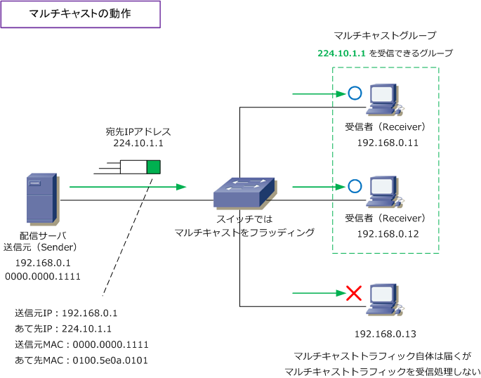
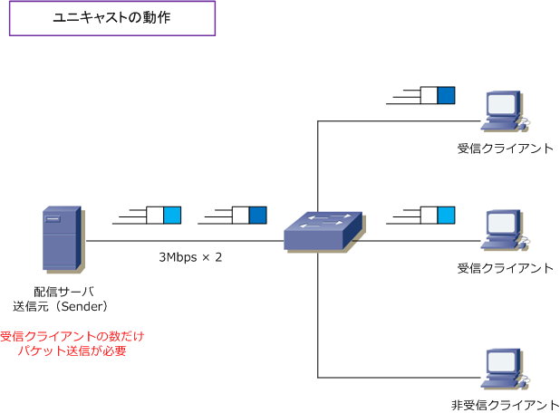
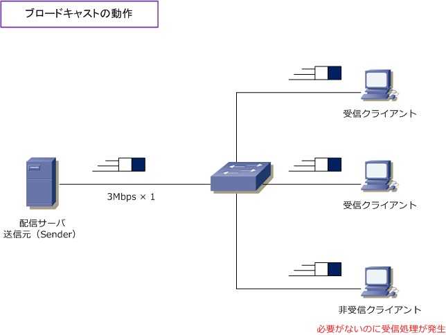
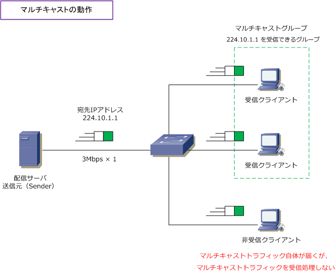

Multicast
マルチキャストとは
マルチキャストとは、ネットワークで特定の複数のノードに対して、1つのデータを同時に送信することです。 例えば、ビデオサーバからストリーミング配信される１つのデータを特定の複数のクライアントへ同時に送信 できます。テレビ会議システムの映像や音声データ、動画配信などにおいてトラフィックを効率よく伝送する ためにマルチキャストは一般的に使用されます。Ciscoの音声システムでは保留音の伝送等でも利用されます。

マルチキャストでは、マルチキャスト用のIPアドレス（224.0.0.0 ～ 239.255.255.255）が用意されており マルチキャスト用のIPアドレスをアプリケーションで指定します。また、マルチキャスト用のMACアドレス もあり、マルチキャストを受信するマルチキャストグループに対してはこのマルチキャストMACアドレス宛 のパケットが受信できるように設定されます。スイッチはマルチキャストトラフィックをフラッディングする ため、Receiver以外のクライアントPCにもマルチキャストは届きますが、受信処理は行われずに破棄します。
マルチキャストを理解するために、ユニキャスト伝送とブロードキャスト伝送について以下で解説します。 これらの違いを理解することで、動画配信において大容量のデータ伝送を行うことに、なぜユニキャスト 伝送では拡張性がなく、なぜブロードキャスト伝送では非効率で無駄な帯域消費が発生するのか分かります。
| 通信方式 | 説明 |
|---|---|
| ユニキャスト | ユニキャストは、単一のアドレスを指定して、1対1で行われるデータ通信のことです。 |
| マルチキャスト | マルチキャストは、特定のアドレスを指定して、1対複数で行われるデータ通信のことです。 |
| ブロードキャスト | ブロードキャストは、同じデータリンク内の全宛先を指定し、1対不特定多数で行われるデータ通信。 |
ユニキャスト伝送の動作
ユニキャストでは、1対1の通信であることから、全ての受信者ごとに別々の伝送を行う必要があります。 メールチェック、ネットサーフィン、ファイルのダウンロードのトラフィック伝送では問題ないのですが ストリーミング配信などでは宛先の数だけ大容量のデータを送信する必要があり、送信元サーバ側の負荷 と使用する帯域幅が非常に大きくなります。
下図の通り、配信サーバから3Mbpsのストリーミングデータを受けるとします。ユニキャスト通信の場合 受信クライアントの数だけ同じデータを送信する必要があります。つまり、クライアントが1000台の場合 3Gbps帯域幅を送信側で消費することになり、それを送出し続けるサーバ側にも、大きな負荷になります。

ブロードキャスト伝送の動作
ブロードキャストは１対ネットワーク上の全ホストの通信であることから、送信するパケットは1つでよく ユニキャスト伝送のように、送信側で激しく帯域消費したり、送信元側の負荷は大きくなりません。ただし 同一セグメント上の全てのクライアントがトラフィックを受信することになり、ネットワーク全体としては 負荷となります。また、ストリーミングデータを受信する必要のないクライアントにとっては、それを受信 処理する無駄なCPU処理と無駄な帯域消費が発生してしまいます。

マルチキャスト伝送の動作
マルチキャストでは、1対特定グループのホストの通信であることから、送信するパケットが1つでよい上に データを受信したい特定のグループのホストだけが受信できるので、ユニキャストやブロードキャスト伝送 による問題も発生しません。
下図の配信サーバは、マルチキャストグループで囲んでいる2台の持つマルチキャストアドレスを宛先に指定 してデータを送信して、受信したいクライアントだけがトラフィックを受信して処理していくことになります。 非受信クライアントにもトラフィック自体は着信しますが、マルチキャストグループに参加していないので、 マルチキャストトラフィックの受信処理は行われず、非受信クライアントでの無駄なCPU消費は発生しません。

スイッチでは、ブロードキャストやマルチキャストのトラフィックは、そのままフラッディングさせるので 非受信クライアントにもマルチキャストのトラフィックは着信します。ただし、マルチキャストルーティング によって着信してくるマルチキャストパケットは、ホストとルータ間でやりとりするIGMPパケットを盗み見 するスイッチのIGMPスヌーピング機能で、非受信クライアントに対する無駄なトラフィック転送を防げます。